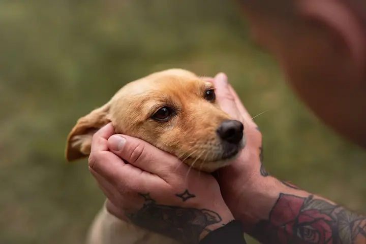

Pohlednice č. 1
Rodinné focení
Uděláme si malou procházku venku, děti si hrají a já kolem vás kroužím s foťákem. Na narozeninové focení mám malé bílé tee-pee, vy přinesete dortík.
Pro: vás · Od: Mirka
Rodinná a portrétní fotografka — Kladno
Ahoj, jsem Mirka. Fotím lidi, kteří k sobě patří.
Napište miFotím hlavně na Kladně ↙

Žádné pózování, jen společná procházka.
O mně
Nefotím obrázky, zachycuji vzpomínky a příběhy. Proto u mě nečekejte strojené pózy ani bílé plátno. Uděláme si malou procházku, při které budu kroužit kolem vás a cvakat jako blázen, a vy se můžete věnovat jeden druhému.
Fotím převážně v exteriéru, v přírodě i ve městě. Když je potřeba, po domluvě můžeme focení uskutečnit v podniku DomaBar nebo přímo u vás doma. Na narozeninové focení mám malé bílé tee-pee, vy zajistíte dortík. Věřte mi, že děti to budou milovat.
Zaměřuji se na rodinné, párové, portrétní a těhotenské focení. Svatby nefotím, raději se věnuji tomu, co mě baví a v čem jsem doma. Těším se na příjemné chvilky, které spolu strávíme.
Co fotím
Pohlednice č. 1
Uděláme si malou procházku venku, děti si hrají a já kolem vás kroužím s foťákem. Na narozeninové focení mám malé bílé tee-pee, vy přinesete dortík.
Pro: vás · Od: Mirka
Pohlednice č. 2
Portrétní focení převážně v exteriéru, v přírodě nebo ve městě. Po domluvě můžeme fotit i v DomaBaru nebo u vás doma.
Pro: vás · Od: Mirka
Portfolio
Jak to probíhá
Napište mi e-mail nebo zprávu a vyberte si balíček Moments, Memories nebo Story. Domluvíme termín a místo, nejčastěji někde venku.
Focení trvá podle balíčku 30 až 90 minut. Žádné pózování, jen společná procházka. Platí se hotově v den focení.
Do 3 pracovních dnů vám pošlu odkaz na galerii s náhledy. Vyberete si fotky podle balíčku, další můžete přidat za 200 Kč za kus.
Upravené fotografie vám pošlu přes úschovnu do 10 pracovních dnů od výběru.
Otázky
Balíček Moments stojí 1990 Kč (30 až 60 minut, 10 fotek s detailní úpravou a retuší), Memories 3490 Kč (20 fotek) a Story 4990 Kč (60 až 90 minut, 50 fotek se základní úpravou podle mého výběru).
Převážně venku na Kladně. Výjimečně a po domluvě můžeme fotit v podniku DomaBar nebo u vás doma. Ateliér nemám.
Originály neposkytuji, prosím nežádejte o ně. Náhledy z galerie je zakázáno ukládat a zveřejňovat.
Svatby nefotím, nemám na ně potřebné vybavení ani zkušenosti. Ráda vás ale vyfotím jako pár na procházce.
Ano, nabízím poukazy ve třech cenových variantách podle balíčků, od 1990 Kč. Platí 6 měsíců a dostanete je v dárkové obálce nebo elektronicky.
Napište mi
foto@mirkakrejcova.cz · Kladno
Mirka